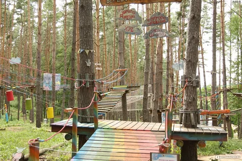
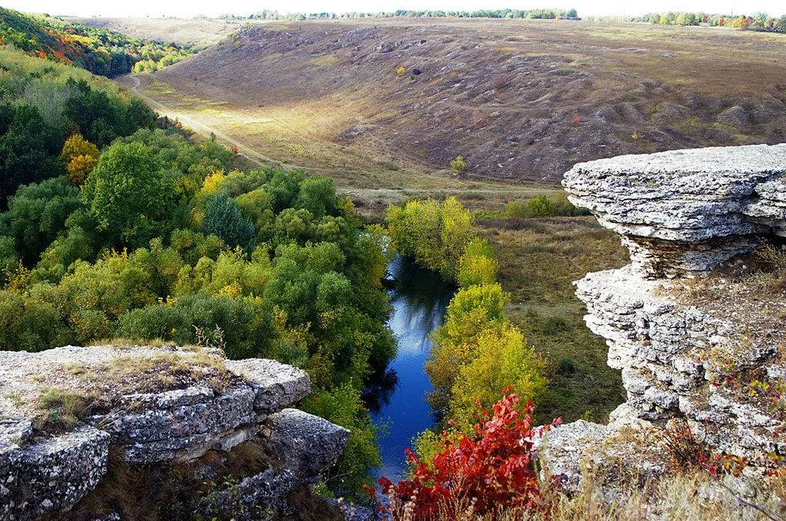
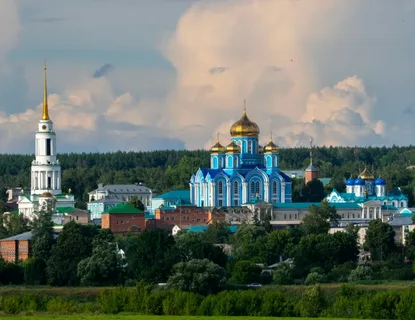
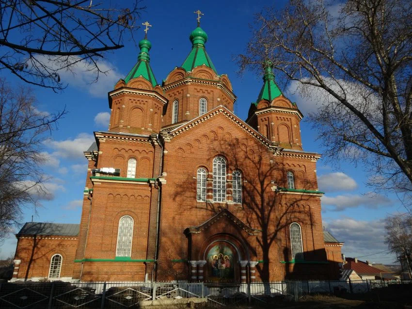
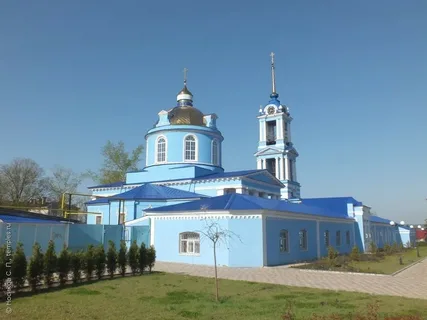
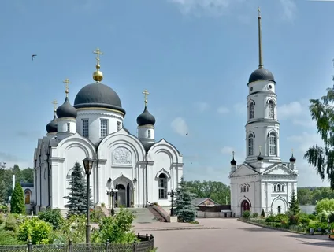
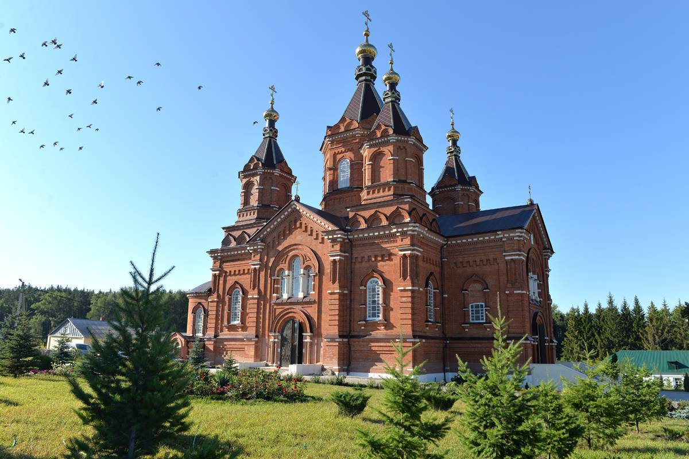
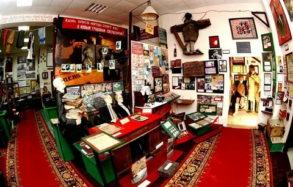

Развлечения
Кудыкина гора — крупнейший туристический объект Липецкой области.На Кудыкиной горе находится 350 гектаров с уникальными арт-объектами, сафари-краем в новом русском стиле.

Профессионально и увлекательно о богатом подводном мире, его законах и удивительных обитателях вы узнаете в Воронежском океанариуме, который расположен на территории Град.

Парк приключений представляет собой совокупность аттракционов на деревьях и мест отдыха. Расположен в сосновом лесу Задонского района на территории базы отдыха "Чайка".

Спортивный комплекс «Форест-парк» в урочище Уткинский отрез недалеко от Задонска стал одним из самых посещаемых спортивно-развлекательных объектов, наверное, во всем Черноземье.
Галичья Гора — государственный заповедник в центре Северо-Донского реликтового ботанического района. Памятник природы, ботанический феномен.

Монастыри
Задонский Рождество-Богородицкий монастырь — мужской монастырь Липецкой епархии Русской православной церкви, основанный в городе Задонске Воронежской губернии (ныне Задонский район Липецкой области), на левом берегу Дона.

Имеет долгую и интересную историю. Это предшественник нынешнего Троицкого собора. Первые годы существования и основание связано с именем Матроны Поповой. Женщина решила посвятить свою жизнь богу, уверовала в свт Тихона.

Собор Успения Пресвятой Богородицы. Первый приходской храм Задонска заложен был в 1797 г. в южной его части, напротив Богородицкого монастыря, через речку Тешевку.

Свято-Тихоновский Преображенский женский монастырь находится в 7 км от г. Задонска в живописном лесном месте на склоне холма. История обители тесно связана со свт. Тихоном Задонским.

История Тюнинской обители ведет начало с 1814 года, когда был построен храм в честь иконы Пресвятой Богородицы «Живоносный Источник» над тем самым колодезем с родником, который обустроил еще при жизни святитель Тихон.

Музеи
«Неакадемический» музей прессы «Антресоль» был открыт в небольшом городке Задонск в 2016 году и сразу стал одним из главных достопримечательностей в туристическом кластере «Задонщина».

История Тюнинской обители ведет начало с 1814 года, когда был построен храм в честь иконы Пресвятой Богородицы «Живоносный Источник» над тем самым колодезем с родником, который обустроил еще при жизни святитель Тихон.